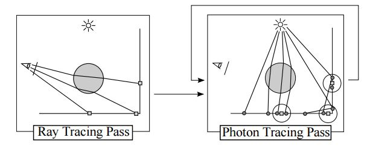
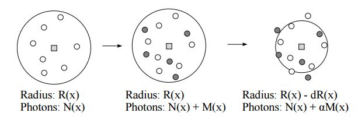
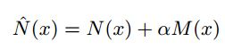
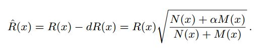
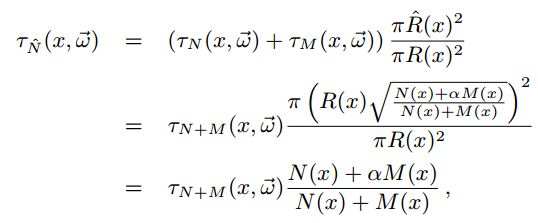
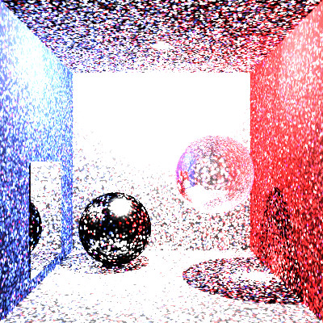
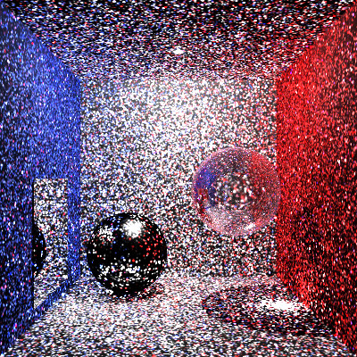

r05922101 楊騏瑄
因為photon mapping這個詞很帥所以我想要做做看，但是pbrt v2已經實作了，所以就轉向做它的改良版。且pbrt v3有實作stochastic progressive photon mapping可以作為參考
photon mappimg的缺點是因為有限的記憶體導致儲存photon有上限，因此造成儲存的photon數量不夠來描述整個場景，故傳統photon mapping會有結果比較粗糙的情況。 而progressive photon mapping每個iteration處理完photon即可丟棄，只有hit point的數量會受到記憶體空間的限制，而若更改良版的stochastic progressive photon mapping則連hit point數量也不會受記憶體限制。
progressive photon mapping和傳統photon mappimg的步驟是顛倒的，先射出camera rays並紀錄它們和場景的交點(稱為hit point)，之後再循環的去做射出photon的動作。可以用下圖表示：
 方格是hit point，而圓點是photons。progressive photon mapping的主要概念就是利用累積的方式，來慢慢逼近每個hit point真正的顏色。所以會在每一輪射出固定量photons，並把它們的flux加到半徑有涵蓋住它們的hit point上。此外，在每次加上photon的flux到某hit point時，會縮小其半徑，並在假設photon的密度不變下對它累積的flux做修正。用這個方式做下去，此paper提到他將會有個收斂的結果，同時也是就是真實的結果。
半徑縮小示意圖
n hat為hit point經過一次iteration後增加的photon，其中alpha為一個自訂的參數，預設為0.7
R hat為經過一次iteration後的新半徑
Tau_N hat為經過一次iteration後新flux
我使用kd tree去存每一輪產生的photon並用hit point list中的每一個hit point來檢測那些photon在半圓中，之所以不把hit point建成kd tree是因為kd tree在搜索時候必須傳入最大的半徑，但是每個hit point的半徑最後都會不一樣。因此若hit point又存在kd tree中的話，變成想要知道最大半徑則要進到kd tree中一個一個找，這就是一個循環卡死的問題了。
以下皆用128 samples/pixel
 2 iteration  16 iteration
由於pbrt v2在設計renderer以及integrator的時候考量到的擴充性不太足夠，像是沒有預留post-process的空間，所以必須修改原本的renderer設計以挪出放post-process的地方。另外像是api.cpp中也預設之後新加的integrator都是surface integrator的son class，在擴充上不是很方便，而v3就一改這樣的設計。最後v2的photon mapping有實現parallel compute的功能，但是我在改寫的時候要同步data出現bug，所以做後只能做沒有parallel compute
Hachisuka T., Ogaki, S., and Jensen, H. W. 2008. Progressive Photon Mapping. SIGGRAPH Asia 2008.